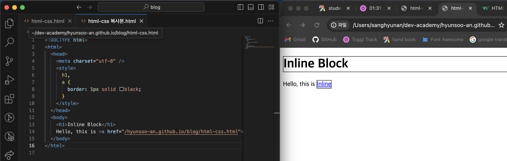

Marking an element as what inline or inline block indicates where the element is located and how it flows within the container.
Inline elements: These elements disappear as needed, and no line breaks are forced after them. Inline elements include span, a, strong, and em. They are typically placed inline with most content and flow along with the text.
Inline-block elements: These elements behave similarly to inline elements by not forcing a new line, but they also possess some characteristics of block-level elements. They can have margins, padding, and you can set their width and height. Examples of inline-block elements include img, input, and button.
As you can see it automatically make a space between "lnline Block" and "Hello, this is inline"
I have hyperlinked "inline" to other web page. as you can see tag "h1" is using whole line but tag "a" can only be used as large as they are.
Just like "a" tag, a form that is placed on the same line with itself and other text or other information surrounding it is called inline. A tag like "h1" that uses the entire screen by itself is an inline block.